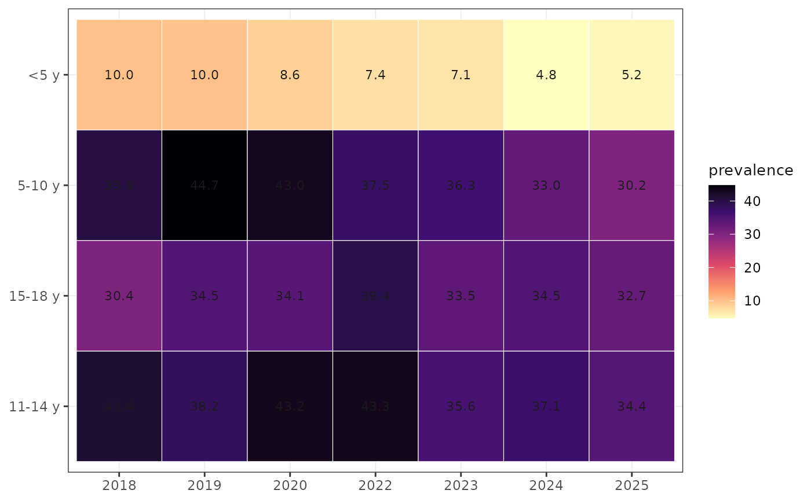
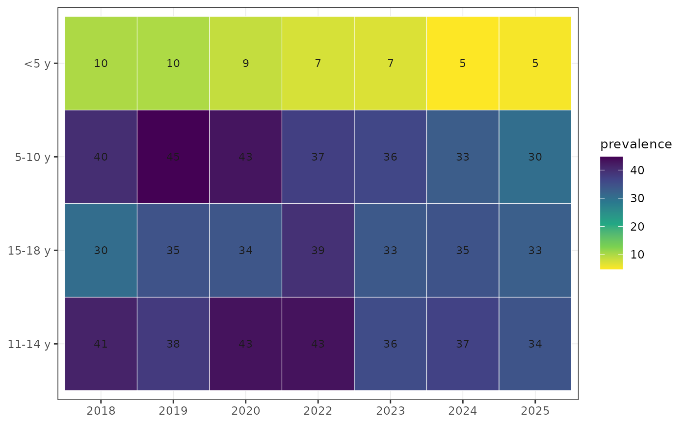

Heat map of a summary by two variables
Arguments
- x
A data frame (for example a prevalence table).
- xvar, yvar
Columns on the two axes.
- fill
Column mapped to colour.
- label
Show values in the tiles.
- digits
Decimals of the labels.
- option
Viridis colour map option (
"magma","viridis","mako", ...).- ...
Display options (see
wgh_plot_options()).
Examples
cl <- wgh_classify(growdat); cl$age_group <- wgh_age_bands(cl$age)
pv <- wgh_prevalence(cl, "overweight_obesity", by = c("yearvisit", "age_group"))
wgh_plot_heatmap(pv, "yearvisit", "age_group", "prevalence")

wgh_plot_heatmap(pv, "yearvisit", "age_group", "prevalence", option = "viridis", digits = 0)
